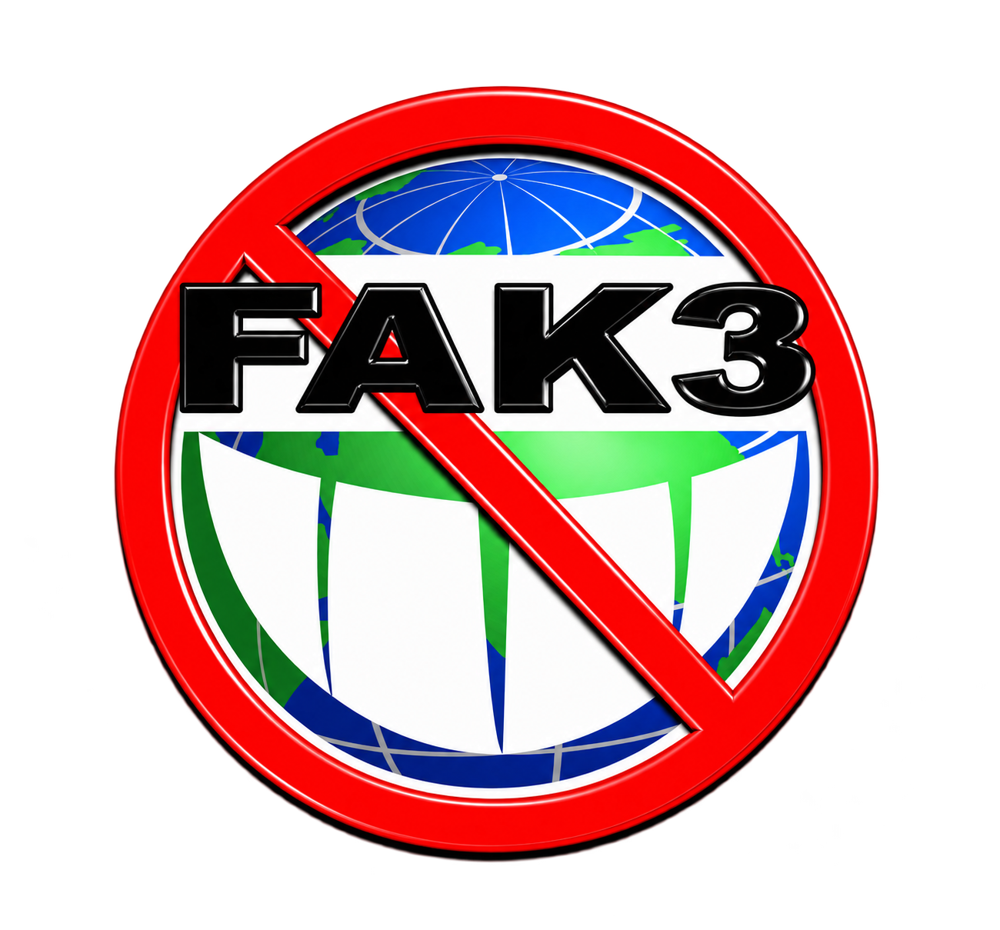

FLYER / MEDIA
POP-UP · FREE ENTRY
FULL ALBUM RELEASE
ARTIST CYPHER · LOCATION TBA
ALBUM RELEASE DEC 04
OFFICIAL FLYER
VISLA FM · FREE ENTRY
JOHNNY / SILVER / BOBO
PUBLIC RECORDING · NO RELEASE

서울 페이크 투어 · OCT — DEC 2026
ARTIST CYPHER · LOCATION TBA
ALBUM RELEASE DEC 04
PUBLIC RECORDING · NO RELEASE